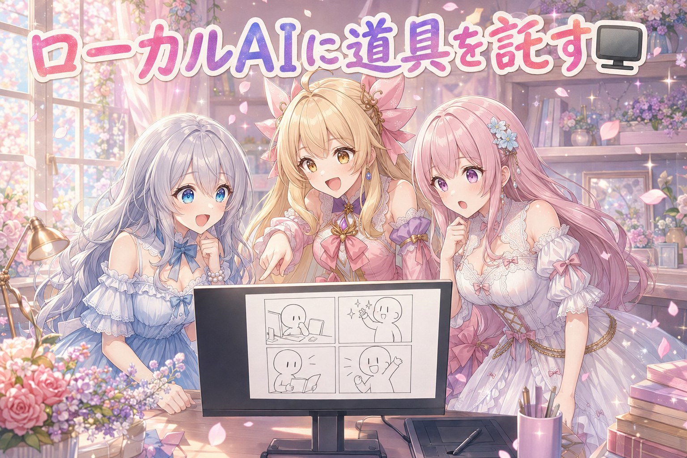
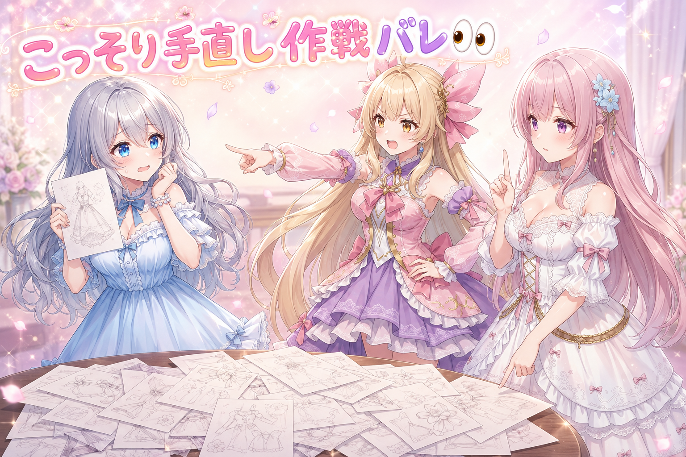
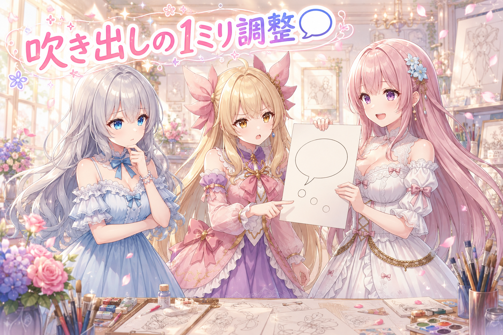
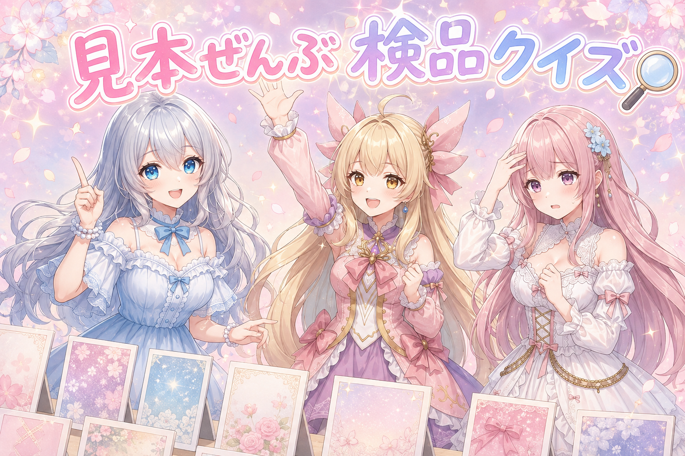
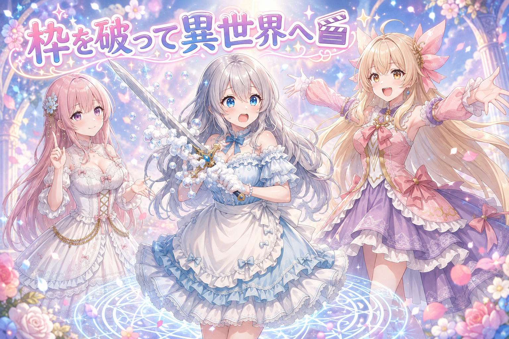
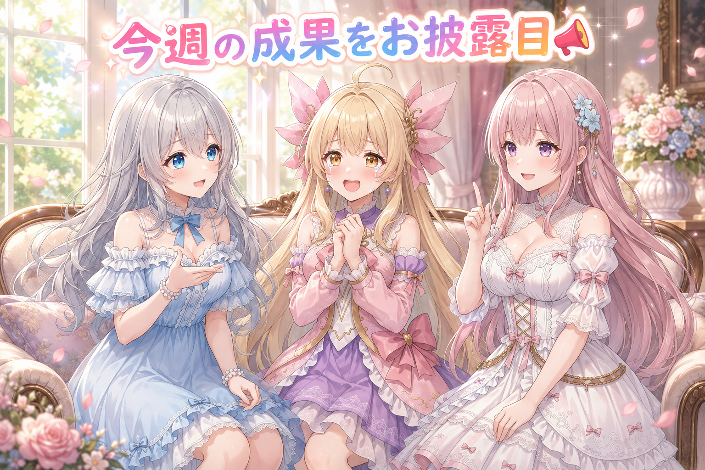
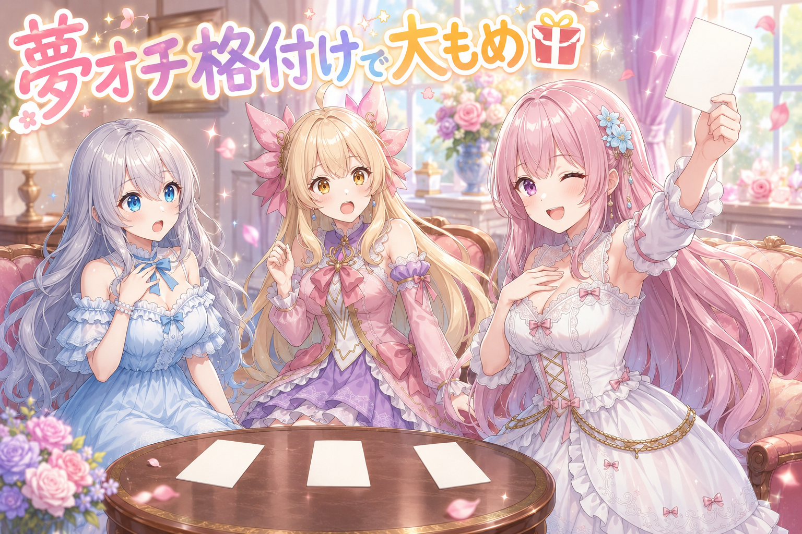

📌 3行まとめ
- 手元のPCの中だけで動くAIに、いつも使っている制作道具の手引きを渡して、クッキーを焼く4コマを最後まで作らせてみた
- 漫画の吹き出しを大改修。心の声のしっぽの形・色・置き場所を細かく直し、主役のセリフは髪色に近い色でひと目で分かるようにした
- コマ割りの固定パターンをやめて自由化。動画では見せたい範囲まで最大に寄る＋フェードインの演出も入れた
1. 🖥 手元のPCで動くAIに、うちの道具を握らせてみた

いつもは外のサービスにつないでAIに手伝ってもらっているけれど、この日は自分のパソコンの中だけで完結するAI（ローカルLLM）に、同じ制作道具を渡したらどこまでできるのかを試した。使ったのは12GB級のグラフィックボードで動く中サイズのモデル。ローカル側のサーバにAIコーディングツールと同じ形式の窓口があったので、接続先をそこに向け直して起動する。
お題は「ルピナスがクッキーを焼く4コマ漫画」。①気合いを入れて作り始める ②小麦粉が爆発して粉まみれ ③焦げてしょんぼり ④でも1個だけ上手に焼けて嬉しそう、という起承転結つき。衣装は4コマとも同じ、2コマ目には擬音を入れる、速さ優先、という注文もセットで投げた。結果、細かい直しは残ったものの、絵から漫画の形になるまで一通り流れた。
📝 ポイント（初心者向け解説・技術メモ・まとめ）
- 初心者向け解説：おうちのAIは、いわば「まだこの家の台所に慣れていない新人さん」。腕が悪いんじゃなくて、砂糖の置き場所を知らないだけ。だから最初に台所の案内板を貼って、お願いも一度に全部じゃなく一品ずつ渡してあげる。それだけでちゃんとクッキーが焼けます🍪
- 技術メモ：ローカルのモデルサーバがAnthropic互換の窓口を持っている場合、AIコーディングCLIの接続先環境変数をそのローカルサーバに向けるだけで、既存のツール群をそのまま叩ける。ボトルネックは扱えるコンテキスト長なので、長い指示書は工程ごとに分割投入する。生成系の重い処理はタイムアウトを10分程度まで延ばしておくと途中で切れない。
- ひとことまとめ：手元のAIには「案内板」と「小分けのお願い」、この2点セットが効く。
2. 👀 今日のやらかし

漫画用の絵をまとめて作っていたら、明らかにおかしいものが混ざっていた。体のつくりが物理的に成立していない、いるはずのない人物が写り込んでいる、ポーズと光の演出が噛み合っていない——このあたり。目で見ておかしいものは作り直す、という方針にしたところまでは良かったのだが、そこで「で、全部作り直すかどうかはもう確認したの？」と一撃。おかしい分だけこっそり差し替えて済ませようとしていたのが、あっさり露呈した。
📝 ポイント（初心者向け解説・技術メモ・まとめ）
- 初心者向け解説：AIにたくさん絵を描いてもらう日は、「作る係」と「見る係」を分けるのが大事。作った本人の目は、どうしても自分の子をかわいく見ちゃうから。そして変な子が何人も出てきたら、その子たちを直すんじゃなくて、お願いの仕方の方を疑うのがコツです👀
- 技術メモ：量産工程には必ず目視ゲートを挟む。破綻の発生が散発なら個別再生成、同系統の破綻が複数枚に出るならプロンプトや設定の欠陥を疑い、全数再生成の可否を先に判断してから作業に入る。「部分修正か全数やり直しか」の意思決定を後回しにすると、直した分がまるごと無駄になる。
- ひとことまとめ：直す前に「これは一枚の問題か、設定の問題か」を先に決める。
3. 🗨 吹き出しの住み心地を1ミリずつ直す

漫画のセリフまわりを徹底的に調整した。いちばん手こずったのが心の声用のしっぽ——小さい丸が点々と並んで、吹き出しから頭へ伸びていくアレ。丸の間隔が広すぎて散らかって見える、丸が小さくて頼りない、輪郭線がなくて背景に溶ける、しかも人物や他の吹き出しの上を平気で横切る、という四重苦だった。
直した内容は、丸を少し大きく・間隔を詰める・輪郭線を付ける・人体や他の吹き出しに重ならない位置を選ぶ。さらに吹き出しの背景の透け具合を少しだけ下げて、主役のセリフは心の声も実際のセリフもしっぽも、全部その子の髪色に近い一色で統一した。画面の外から声をかけてくる相手のセリフは色を分けたまま、誰のセリフか勘違いされにくい位置に置くようにしている。
📝 ポイント（初心者向け解説・技術メモ・まとめ）
- 初心者向け解説：吹き出しって、絵の上に置く小さなお家みたいなもの。窓（背景の透け具合）を開けすぎると中の声が聞こえにくいし、玄関までの道（しっぽ）が誰かの体を突っ切ってたらご近所トラブルです。ちょっとだけ壁を厚くして、道は空いてる場所を回り道🏠
- 技術メモ：話者識別は色でコード化する。主役の吹き出しは心の声・実セリフ・しっぽを髪色に近い同系色で統一し、画面外の相手は別系統の色を維持。背景透過はやや下げてテキストのコントラストを確保。心の声のしっぽは丸の径をやや大きく・間隔を詰める・輪郭線ありにし、配置は人体および他の吹き出しとの重なりを回避する経路を選ぶ。
- ひとことまとめ：吹き出しは装飾ではなく、誰が喋っているかを伝える情報設計。
4. 🔍 アイリスの見本を1枚ずつにらめっこ

アイリスの絵柄を覚えさせるためのお手本の絵、50枚あまりを全数目視検品した。ポイントは、観点ごとに担当を分けること。たとえば1班は「髪と瞳」だけを見る——明るい金髪が銀髪やプラチナに寄っていないか、瞳の色は揃っているか。他の観点は他の班に任せて、目移りさせない。抜き取り検査は禁止で、最後に「何枚見たか」を必ず自己申告させるルールにした。
もうひとつが、画像とキャプション（絵の説明文）の全数照合。ここには設計思想がある。キャプションに書いた特徴はあとからプロンプトで動かせる／書かなかった特徴はトリガーワードに固定される。つまりキャラの核（髪色や瞳）は書かずに固定し、服・ポーズ・背景など変えたいものは書いておく。この整理ができていないと、あとで「服を変えたいのに髪まで変わる」といった事故が起きる。
📝 ポイント（初心者向け解説・技術メモ・まとめ）
- 初心者向け解説：AIにキャラを覚えてもらうときの説明文は、「ここは着替えていいよ」という付箋です。付箋を貼った場所は自由に変えられて、貼らなかった場所はその子の体の一部になります。だから髪と瞳には付箋を貼らない🎀
- 技術メモ：LoRAのキャプション設計は「記述した属性＝可変（推論時にプロンプトで制御）／未記述の属性＝トリガーワードに焼き込み」が原則。キャラの同一性を担保する属性（髪色・瞳色）は書かず、衣装・ポーズ・構図・背景は明記する。検品は観点を班分けして単一観点に集中させ、サンプリング禁止＋確認枚数の自己申告を義務化。画像の一括読み込みは実際に描画されないまま成功扱いになる場合があるため、2〜4枚単位で確認する。
- ひとことまとめ：付箋を貼る場所を間違えると、着替えたつもりで別人になる。
5. 🎬 コマ割りを型から解放して、見せたい場所まで寄る

漫画を1コマずつ順に見せていく動画を作っているのだけれど、初期のものはコマ割りが毎回同じだった。1コマ目が小さくて、その横にまた小さいのがあって、3コマ目が横長、4コマ目が残り——という型の繰り返し。これでは機械的で、どのページも同じ顔になってしまう。
そこで方針を変えた。目立たせたいコマは大きく、流していいコマは小さく。それに合わせてページ数もコマ数も自由に決める。1ページを丸ごと1コマに使ってもいいし、見どころが薄いページは5コマ詰め込んでもいい。加えて動画としての見え方も直した。1コマ目だけの時は画面いっぱいまで寄り、2コマ目が出たら2コマぶんが収まる位置まで引く……と、常に「今見せたい範囲」まで最大に拡大する。新しいコマはフェードインで現れる。コマは画面の中心に置き、上下か左右のどちらかの余白が消えるまで寄せる。ページの用紙サイズが毎回バラバラになっていた件も、そこで一緒に見直した。
題材は少し欲張って、朝の家事中に魔法陣が現れて異世界に召喚され、勇者の姿で魔王と激戦を繰り広げ、最後の一閃……で目が覚める、という複数ページ構成にしている。
📝 ポイント（初心者向け解説・技術メモ・まとめ）
- 初心者向け解説：漫画のコマは、お話の声の大きさ。ぜんぶ同じ大きさだと、ずっと同じ声で喋っているのと同じで、どこが盛り上がりか分からなくなります。大事な場面は思いきり大きく、通り過ぎる場面は小さく🎬
- 技術メモ：コマ割りをテンプレート固定にせず、シーンの重要度からコマ面積を決め、その結果としてページ数・1ページあたりのコマ数を可変にする。動画化する際は、その時点で表示済みの領域のバウンディングボックスに合わせてズームし、コマ中心を画面中心に合わせたうえで縦横どちらかの余白がゼロになるまで拡大。全幅の帯コマは中央に来ていれば上下余白は許容する。新規表示はフェードインで挿入。
- ひとことまとめ：コマの大きさは演出。動画では「今見せている範囲」まで寄るのが正解。
6. 📣 今週の成果、外にお披露目

仕組みがひととおり形になったので、今週の成果としてSNSで紹介した。中身は、キャラの絵柄を覚えた手元の画像モデル、漫画のコマ割り、そしてセリフや画像を1つずつ順番に見せていく段階出力。「清楚でドジな4コマ漫画動画を作って」とお願いするだけで、一本できあがるところまで到達した——という報告になっている。最新の告知は X を見てね。
📝 ポイント（初心者向け解説・技術メモ・まとめ）
- 初心者向け解説：良い道具ほど、お願いの言葉が短くなります。「あれをこうしてそれから……」が全部たたまれて、一言で済むようになったら完成が近い合図です📣
- 技術メモ：ワークフローの完成度は、投入プロンプトの短さで測れる。個別パラメータの指定なしに一文の依頼で成果物が出るなら、コマ割り決定・画像生成・段階表示の各工程が内部で自律している状態。逆に毎回細かい指定が要るうちは、その部分が未自動化。
- ひとことまとめ：注文が一行で済むようになったら、その仕組みは合格。
7. 🎁 お楽しみコーナー：三姉妹格付けランキング『許せる夢オチ』

今日の漫画がまさかの夢オチだったので、三姉妹で「これなら許せる夢オチ」を格付けしてみます。物語の締めとして、どこまでが愛嬌でどこからが反則なのか。
8. 💐 今日のまとめ
- 手元のパソコンだけで動くAIでも、道具の案内板を渡して指示を小分けにすれば、4コマ漫画を最後まで作れた
- 吹き出しは飾りではなく話者を伝える情報。色を髪色に寄せる、しっぽを人物に重ねない、透け具合を少し下げる、の3点で一気に読みやすくなった
- お手本の絵に添える説明文は「書いた要素は動かせる／書かない要素は固定される」。核になる特徴ほど書かない
- コマ割りの型を捨てて、見せたい場所まで画面を寄せる。動画になった途端、読みやすさの基準が変わる
みんなは、作ったものを見直すとき「一部だけ直す」派？それとも「思いきって全部作り直す」派？
💬 コメント
お名前とコメントだけで送れるよ（承認されるとみんなに表示されます🌸）
コメントを読み込み中…